光釀Custom Blend
時價
一杯不在酒單上的專屬調飲。
由店長依你的故事、心境與喜好，為你訂製一杯不在單上的酒。不同的人，不同的旅途，不同的回憶與緣分，也有不同的專屬配方與價格。
預約資訊
須事先向店長下訂；確認後製作約需一週。價格請洽店長。
一杯只屬於你的光。
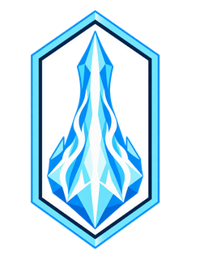
尋找心中那抹被遺忘的水晶之光
La lumière oubliée du cristal.
一座連接兩個世界的特異點
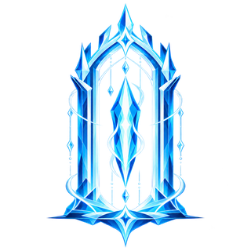
《水晶庭》並非水晶塔本身，而是一處源自亞拉戈時代的「特異點」。其運作原理至今仍難以完全解析，只能推測，或許與那座古塔用以「連接世界」的技術同出一源。
無人知曉它為何會在海霧村顯現，只知它同時朝向兩扇窗：一扇是繁華的都市之夜，一扇是霧雨中的寧靜山林，彷彿將兩個世界的景色，都收攏在這一方庭院裡。
而能夠喚醒這座特異點的，唯有身懷亞拉戈皇血之人。
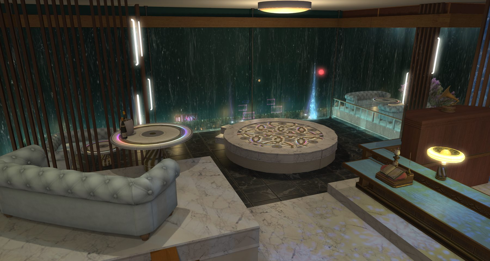
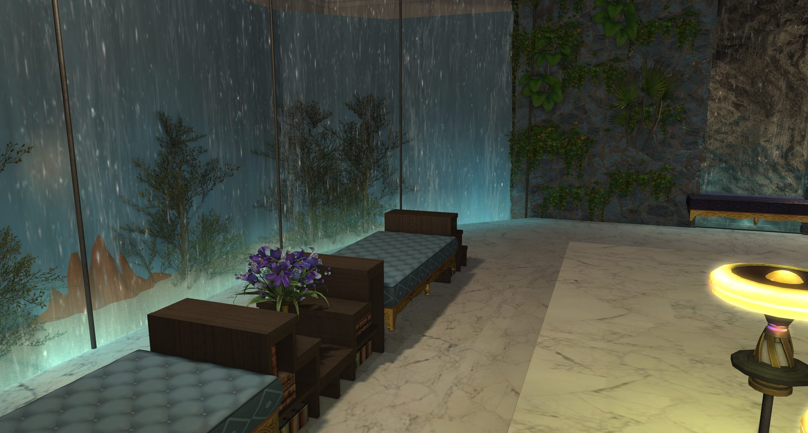

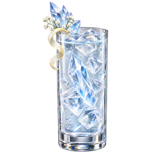
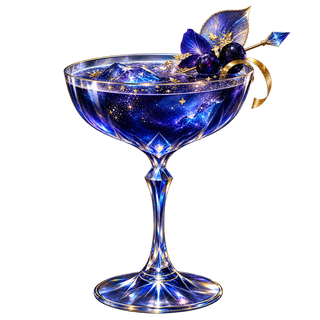
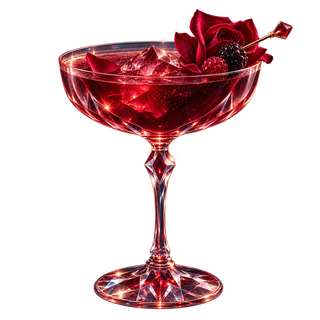
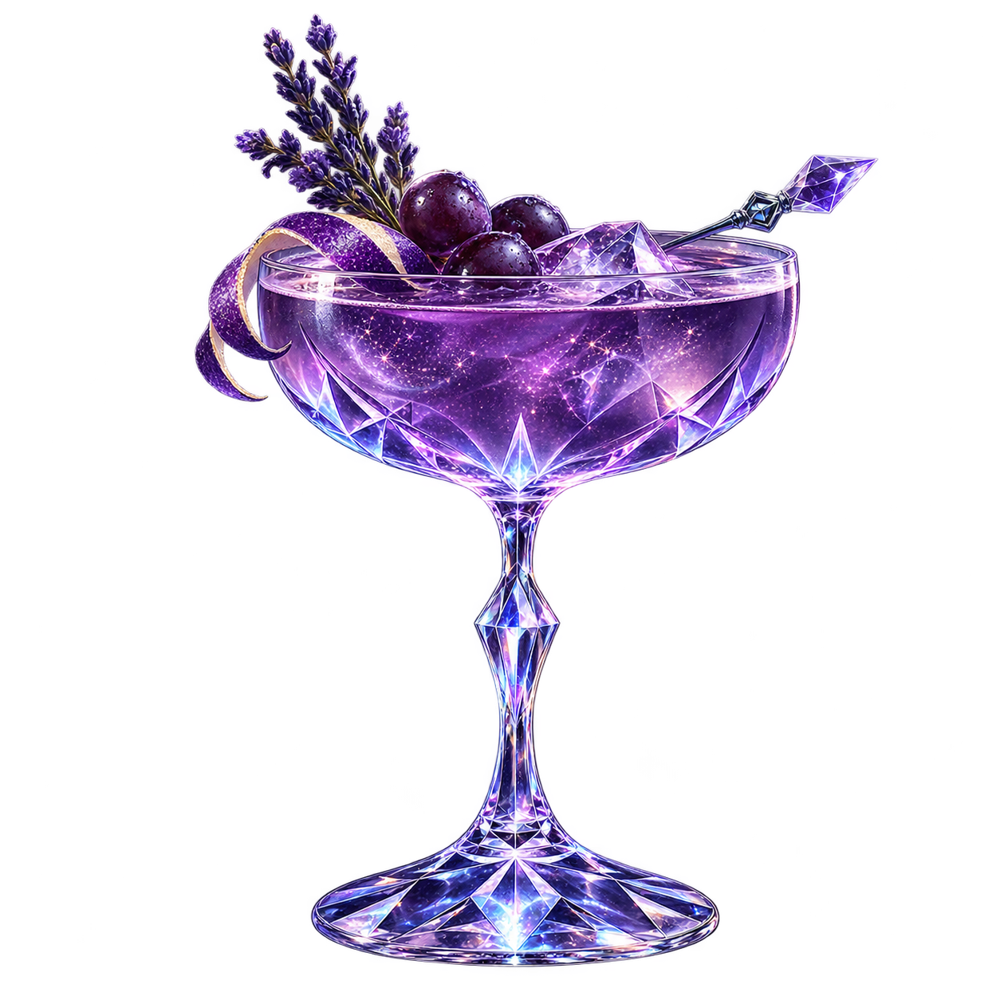
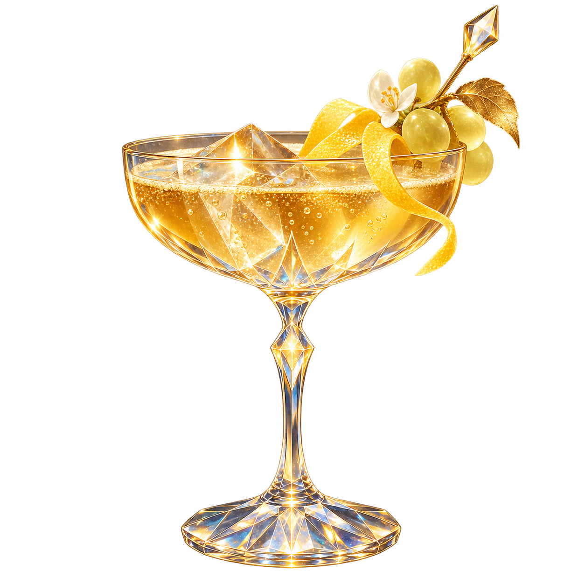
以海德林入夜後，第一顆亮起的星光所釀。
每一夜的星光都不盡相同，杯中的滋味亦然——
是什麼顏色、什麼風味，待看板亮起，親自造訪方知。
……又或者，你只是想點一杯純粹的 Vesper？
20,000Gil
有些酒，不在單上。
若你與這裡的某個人夠熟，或許會嚐到——
一杯只為你而釀的光。
須事先向店長下訂，確認後製作約需一週。

將食人魔南瓜切開、去籽並淺雕南瓜燈表情，抹上奶油烘烤至果肉軟嫩。犎牛肩肉切丁，與星外洋蔥、亞斯拉尼蒜頭及奶油菇一同炒香；加入部分南瓜肉、鮮奶油與麝牛奶慢煨，以北洋食鹽及黑胡椒調味。將內餡填回南瓜盅，覆上加雷馬乳酪與少許岩石乳酪，焗烤至表面金黃，點綴高原芹，半掩南瓜蓋趁熱呈上。
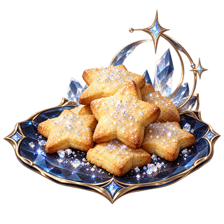
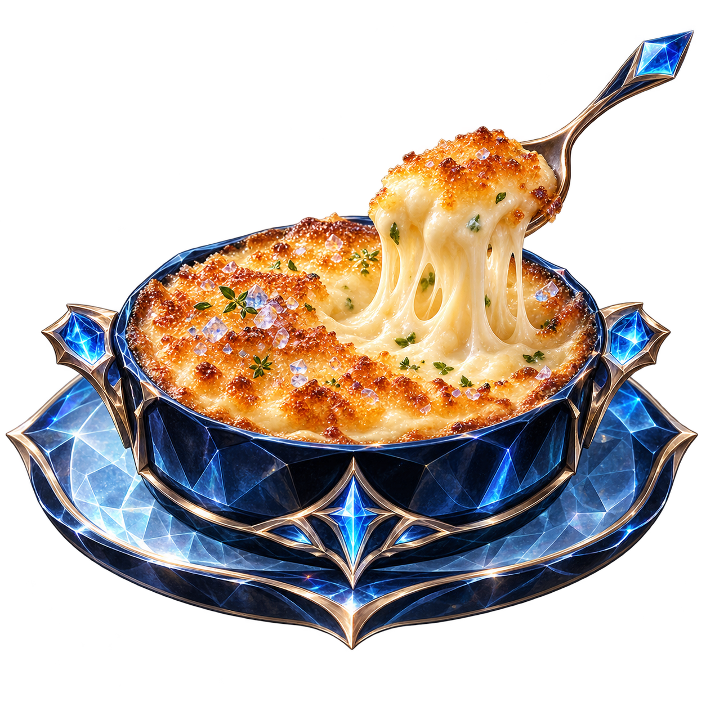
一杯不在酒單上的專屬調飲。
由店長依你的故事、心境與喜好，為你訂製一杯不在單上的酒。不同的人，不同的旅途，不同的回憶與緣分，也有不同的專屬配方與價格。
須事先向店長下訂；確認後製作約需一週。價格請洽店長。
一杯只屬於你的光。
將相遇的故事，藏進每一道針腳。
以針線縫製衣裳，也將此刻相遇的緣分一同織入其中。待衣裝完成，那些曾在水晶庭交會的光與故事，也會悄悄藏進每一道針腳之間。
一套 11 件｜戰職 IL740｜生產 IL707
予有緣之人・每週限量・敬請預約；價格及預約請洽店長。
願這份緣分，往後仍能隨你一同前行。
留一段時間，只為好好說話。
在特異點最靜的角落，聽你說，也為你斟一杯。交換心事與祕密的專屬時光。
有些話，只能在兩個世界的交界說出口。
讓光替你記住今夜。
由攝影擔當為你尋景、構圖，留下只屬於此刻的影像。
半身寫真為一次拍攝時段，可連續取景拍攝多張。
已帶位旅者可於原桌次直接追加指名服務，無需重新取號。
有些相遇，不該只留在記憶裡。